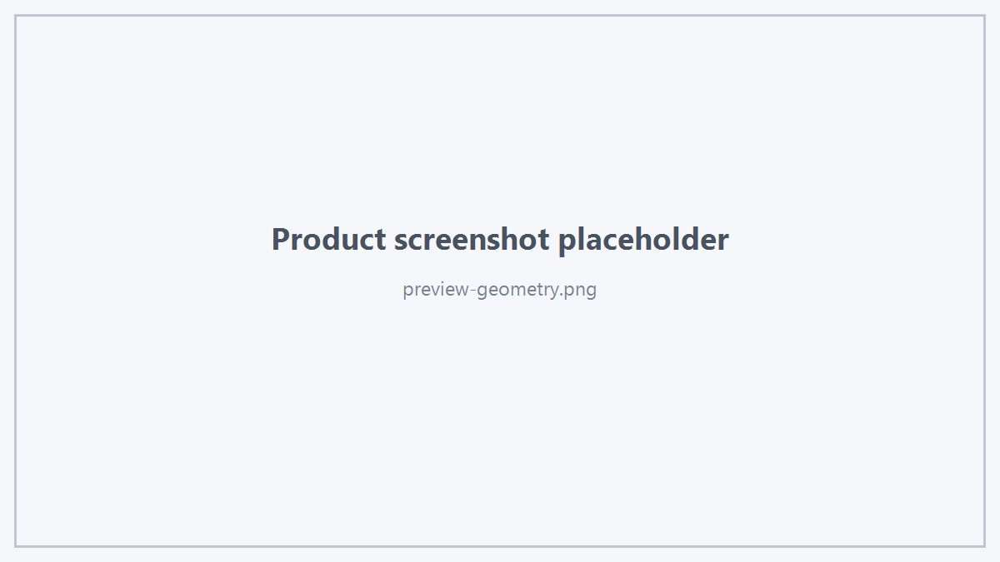

Preview 用于临时建模、拖拽、移动、旋转、阵列、吸附提示等交互显示。
Preview 与正式 Display Data 使用不同的生命周期。
1. 基本 Preview
HtsPreviewStyle style;
style.color = {0.0f, 0.65f, 1.0f, 0.35f};
style.drawFaces = true;
style.drawEdges = true;
viewer.upsertPreview(
"MovePreview",
previewData,
style);
tag 是 Preview 的稳定身份。
再次使用相同 tag 调用 upsertPreview() 表示添加或替换该 Preview。

Preview Geometry
2. Preview Style
HtsPreviewStyle 包括：
- color
- lineWidth
- drawFaces
- drawEdges
- useLighting
- depthTest
- depthWrite
- layer
- linePattern
Layer
enum class HtsPreviewLayer
{
Scene,
Overlay
};
Line Pattern
enum class HtsPreviewLinePattern
{
Solid,
Dashed
};
3. Preview Transform
viewer.setPreviewTransform(
"MovePreview",
HtsTransform::translation(5.0, 0.0, 0.0));
HtsTransform 是 column-major 4×4 affine transform。
4. Visible
viewer.setPreviewVisible("MovePreview", false);
5. Has Preview
if (viewer.hasPreview("MovePreview")) {
}
6. Preview Axis
viewer.upsertPreviewAxis(
"LocalAxis",
origin,
xDirection,
yDirection,
zDirection,
20.0);
适合：
7. Preview Marker
viewer.upsertPreviewMarker(
"SnapPoint",
worldPoint,
HtsFeaturePointKind::EdgeMidpoint,
false);
8. Remove
viewer.removePreview("MovePreview");
全部：
9. 推荐使用原则
不要为了移动 Preview 而持续重建正式 Display Object。
如果 Preview 几何不变而只是位置变化，优先使用 setPreviewTransform()。
 1.18.0
1.18.0